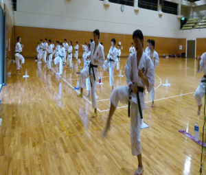
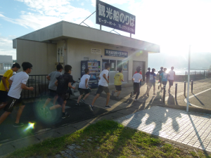
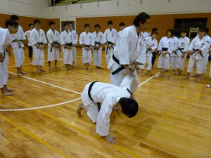
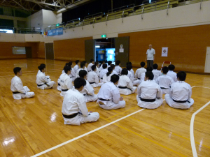
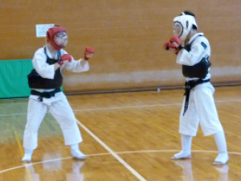
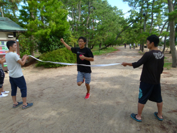
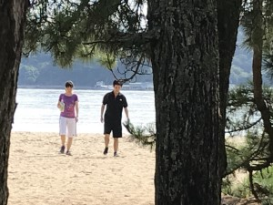
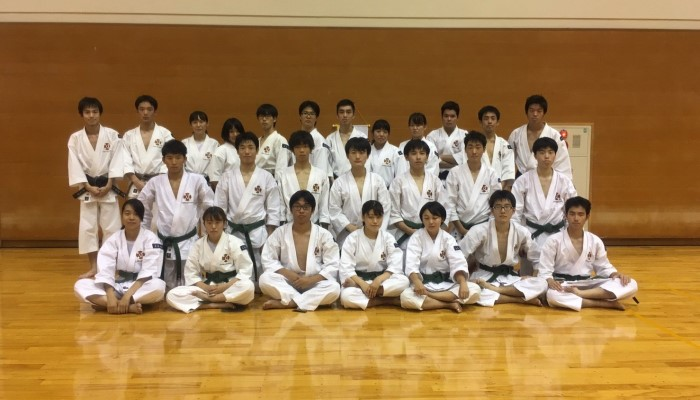

京都大学体育会少林寺拳法部
写真
夏合宿（2018年度）
時間をふんだんに使った基本で、基礎から力をつけていきます。
朝ジョグの時間です。心地よい潮風を受けながら早朝の宮津を駆け抜けます。
術科の時間。八木監督より技術指導を賜ります。
今年もこの部の創設者の一人、後神先輩のご講話を全員で聞きました。
乱捕練習、お互い相手を倒さんと全力で頑張ります。
天橋立を見ながらの１５kmマラソン、最後は天橋立を端から端まで走ります。一回生が根性を見せました。
マラソン終わりの一時の休息。
１週間の夏合宿を終えた後の集合写真、全員お疲れ様でした。この夏合宿の経験を糧にこれからますます頑張っていきましょう。